3. Context and Scope
3.1 Business context

Diagram source: diagrams/context.mmd.
Render with
node docs/scripts/generate-diagrams.mjs.
| Partner | Direction | Exchanged | Notes |
|---|---|---|---|
| Operator | in / out | Natural-language question or error code → operator-safe answer with citations, or escalation advice | Never receives electrical or mechanical repair steps (NFR-3). |
| Techniker | in / out | Question → full technical answer with citations; new
protocol → RECEIVED → INDEXED / FAILED |
Writes since v1.2. Never corrects, not even their own protocol. |
| Schichtleiter | in / out | New protocol (form or text) and corrections with a mandatory reason → re-indexed protocol | The corrector in the trust chain. May not approve. |
| Admin | in / out | User administration (in Keycloak); corpus review, archive, and approval of protocols | Approval carries an actor and a time. Refused for a protocol the same person filed or last corrected. |
| Keycloak | out / in | OIDC authorization requests → ID/access tokens (JWT) with realm roles | Realm maintenance. Also the login UI; the app
has no login form. |
| PostgreSQL + pgvector | out / in | SQL: protocol metadata, chunks, embeddings → filtered nearest-neighbour results | Single datastore, one backup. |
| EU-hosted LLM provider | out / in | Embedding requests and chat/completion requests → embedding vectors, generated answers | OpenAI-compatible API; provider choice pending ADR-002. The only external network dependency at query time. |
| Docker volume (file storage) | out / in | Original uploaded files; DB stores only the path | No BLOBs in Postgres. |
3.2 Technical context
| Interface | Protocol / technology | Purpose |
|---|---|---|
| Browser ↔︎ frontend | HTTPS, Angular SPA | Three views: search, upload, login redirect. |
| Browser ↔︎ Keycloak | OIDC Authorization Code Flow + PKCE, public client
frontend |
Login and token issuance; redirect URI
http://localhost:4200/* in development. |
| Frontend ↔︎ backend | HTTPS/REST,
Authorization: Bearer <JWT> |
Backend is an OAuth2 Resource Server; realm roles map to Spring Security authorities. |
| Backend ↔︎ Keycloak | JWKS over HTTPS | Token signature validation and audience check; no per-request call to Keycloak. |
| Backend ↔︎ PostgreSQL | JDBC, port 5432 | Relational filter and vector ranking in one query. |
| Backend ↔︎ LLM provider | HTTPS, OpenAI-compatible REST | Embeddings and answer generation; EU region only. |
| Backend ↔︎ volume | Filesystem | Original files, path stored in
PROTOCOL.source_file. |
3.3 Explicitly out of scope (Phase 1)
Kafka and separate microservices (planned Phase 2, ADR-001); ticketing / escalation workflow / CMMS functionality; OCR for scanned documents and digitisation of paper manuals (stretch goal); multi-tenancy; a mobile app; protocol editing and versioning. Search scope in Phase 1 is the exact machine only — “similar machines” is a Phase 2 candidate.